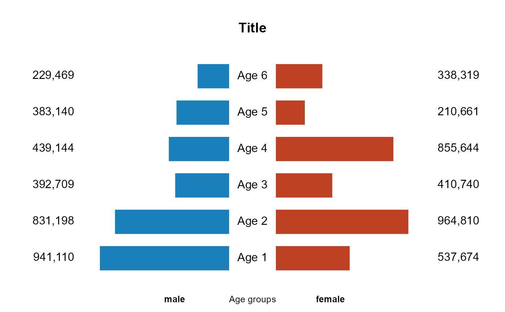
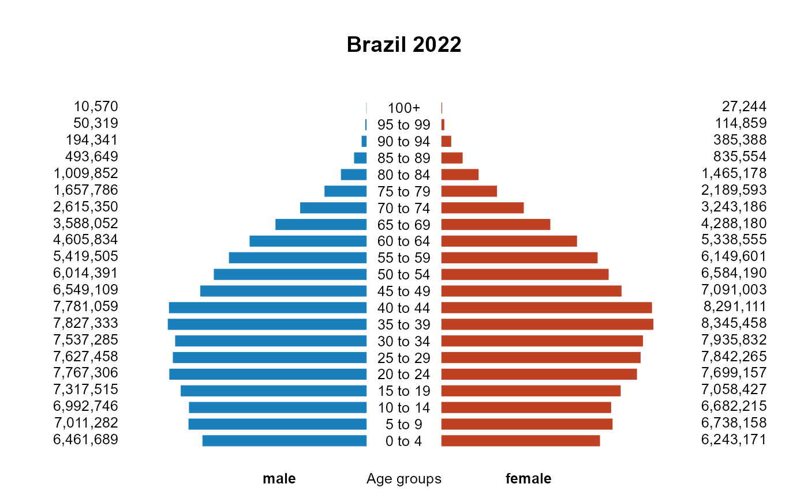

bar2plot.RdA graph showing the distribution of age groups within a population, divided by sex
a vector of values for the left side of the graph.
a vector of values for the right side of the graph.
main title.
a numerical value that controls the size of the horizontal space between the bars. The default is 1.5.
a vector of colors to be used to fill the bars. The default is c("#bf4124","#1a80bb").
the color of the border around the bars. The default is "black".
a label vector for the bars, which will be displayed in the centre of the chart. If this is not specified, 'Age 1', 'Age 2', and so on will be displayed.
a numerical value that controls the size of the labels for the bars. The default is 1.
a numerical value that controls the size of the of labels at the bottom of the plot. The default is 1.
a label showed at the bottom of the plot. The default is "Age groups".
a label vector for the left and right sides of the graph. The default is c("male","female").
the symbol used to add thousands separators to large numbers, making them easier to read. The default is ",".
The function returns a plot (silently).
This function produces a graph similar to an age pyramid. It shows the distribution of various age groups within a population, divided by sex. Males are displayed on the left and females on the right, with the youngest age groups at the base and the oldest at the top.
## Example 1
x <- sample(100000:999999,6)
y <- sample(100000:999999,6)
bar2plot(x,y,main="Title",cexleg=0.8,border=NA)

## Example 2
# Brazilian population. Demographic census, 2022.
# Data from the Brazilian Institute of Geography and Statistics (IBGE)
x <- c(6461689, 7011282, 6992746, 7317515, 7767306, 7627458, 7537285,
7827333, 7781059, 6549109, 6014391, 5419505, 4605834, 3588052,
2615350, 1657786, 1009852, 493649, 194341, 50319, 10570)
y <- c(6243171, 6738158, 6682215, 7058427, 7699157, 7842265, 7935832,
8345458, 8291111, 7091003, 6584190, 6149601, 5338555, 4288180,
3243186, 2189593, 1465178, 835554, 385388, 114859, 27244)
ages <- c("0 to 4", "5 to 9", "10 to 14", "15 to 19", "20 to 24",
"25 to 29", "30 to 34", "35 to 39", "40 to 44", "45 to 49",
"50 to 54", "55 to 59", "60 to 64", "65 to 69", "70 to 74",
"75 to 79", "80 to 84", "85 to 89", "90 to 94", "95 to 99",
"100+")
bar2plot(x,y,main="Brazil 2022",cexleg=0.8,border=NA,legm=ages,cexlegm=0.8)
